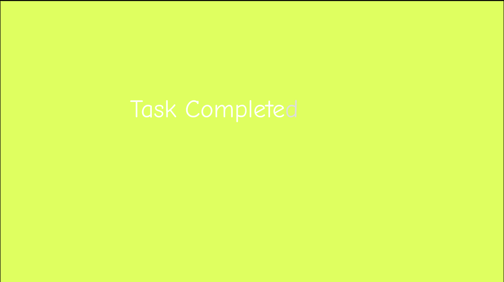
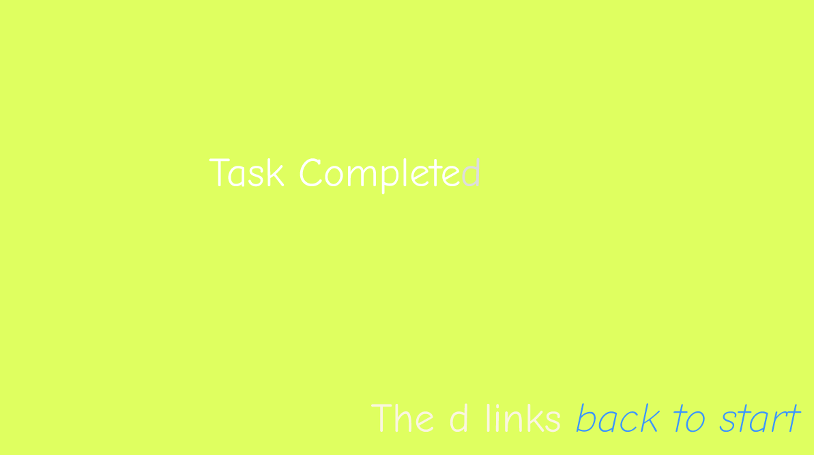

Participant: Kacie Franklin
Task: try using it and imagine you're trying to submit your work for HTML basics, task 2
Task completed, issue: tried to click on the submit button at the end (this was before the task complete screen was added).
Notes: "[I] got a little confused because the submit button doesn’t work, if I can suggest having [it] maybe link back to the homepage to indicate it was pressed, it would make it a little clearer. Other than that it was very straightforward and I like the simple aesthetic it’s very clean and easy to read, you did really good."
[Task Complete(d) Page Added]

Participant: Sophia Stanley
Task: bet you can't submit work for HTML Basics Task 2
Task completed without issues
Notes: "I love html!!!!" "I think it was good and well put together, it's very hard to read the text on the Task Completed page and I do not understand why the d is in a different colour to the rest of the text but otherwise it is good"
[Made Clearer That d Is Link To Home]

Participant: Stephen Arthur
Task: try to submit work for HTML Basics, task 2
Task completed, tried to click on checkmarks and assignments tab, but quickly learned that projects and tasks were clickable.
Notes: "got a little lost, there's a lot on screen at once and the buttons aren't the clearest" "it was pretty hard to figure out what to click but other than that it works well, the rest of the UI is nice"
About the ending screen: "amazing, I love that pressing D brought me back"
[No changes for next participant]
Participant: Robert McGregor
Task: try to submit work for HTML Basics, task 2
Task completed with many issues, tried to click on assignments, Protect Dir, and new to you, eventually finding "HTML/CSS Basics..." project, clicking back out of it and back into it, then found task 2 easily, attempted to click on green and red circles (completion markers) "to try to enable things" and the side box for professor notes, eventually found submit button.
Addendum: Assignments tab and completion markers would lead to different paths that eventually lead to task submission, but were not the intended method to follow for this prompt.
Notes: "UI initially seems overwhelming, don't know where to look."
Rob then went back through prototype to follow path correctly, presumably attempting to understand it the path.
[User testing completed with tentative success, all participants completed task, though some struggled to find correct path.]